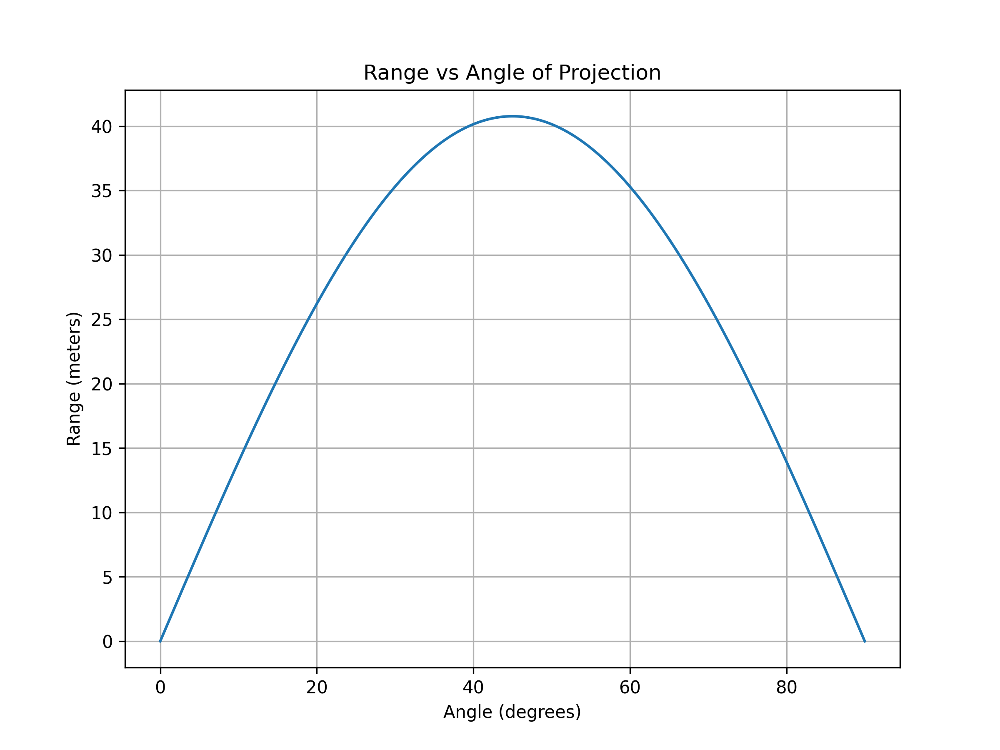

1. Theoretical Foundation
Governing Equations
The motion of a projectile under gravity (without air resistance) is governed by Newton’s Second Law:
Solving these, we get the velocity components:
And the position equations:
where: - \( v_0 \) is the initial velocity, - \( \theta \) is the launch angle, - \( g \) is the gravitational acceleration.
Finding the Range
The range \( R \) is found by solving for \( x \) when \( y = 0 \) (projectile returns to ground):
Substituting into the equation for \( x \):
Using the trigonometric identity \( 2 \sin\theta \cos\theta = \sin 2\theta \), we get:
This shows the range depends on \( \sin 2\theta \), with a maximum at \( \theta = 45^\circ \).
2. Analysis of the Range
- The range is symmetric about \( \theta = 45^\circ \), meaning complementary angles (e.g., \( 30^\circ \) and \( 60^\circ \)) result in the same range.
- Increasing \( v_0 \) increases \( R \) quadratically.
- Increasing \( g \) (e.g., on different planets) decreases the range.
3. Practical Applications
- Sports: Optimizing shot put, long jump, or soccer kicks.
- Military: Artillery calculations.
- Space Science: Designing launch angles for rockets.
Adding complexities like air resistance leads to asymmetric trajectories and reduced range.
4. Implementation in Python
A simple simulation can use NumPy and Matplotlib to visualize the range:
import numpy as np
import matplotlib.pyplot as plt
# Parameters
v0 = 20 # Initial velocity (m/s)
g = 9.81 # Gravitational acceleration (m/s^2)
angles = np.linspace(0, 90, 500) # Angles in degrees
# Calculate range
ranges = (v0**2 * np.sin(2 * np.radians(angles))) / g
# Handle edge case where angle is 90 degrees
ranges[np.isclose(angles, 90)] = 0 # Set range to 0 for 90 degrees
# Plot
plt.figure(figsize=(8, 6))
plt.plot(angles, ranges)
plt.title("Range vs Angle of Projection")
plt.xlabel("Angle (degrees)")
plt.ylabel("Range (meters)")
plt.grid()
# Save the plot as an image
plt.savefig("range_vs_angle.png", dpi=300) # Save as PNG with high resolution
plt.show()
Graphical Representation
Below is the graph showing the relationship between the range and the angle of projection:
